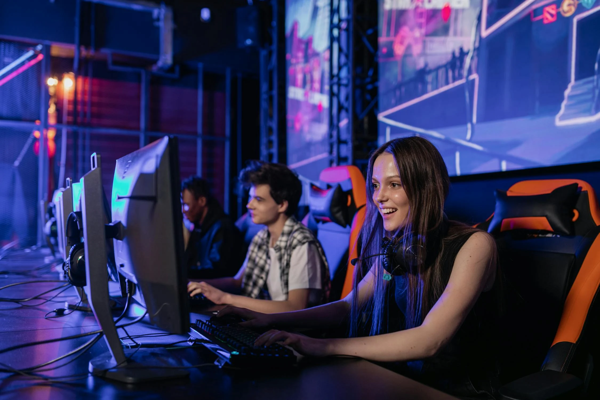

Impact
Transformarea modului în care lucrăm: Calculatoarele au schimbat fundamental modul în care desfășurăm activitățile de lucru. Ele au introdus automatizarea în procesele de producție și de afaceri, accelerând ritmul de lucru și optimizând eficiența. De la utilizarea software-urilor specializate pentru managementul proiectelor și contabilitate, până la integrarea sistemelor informatice în lanțurile de aprovizionare și în activitățile administrative, calculatoarele sunt coloana vertebrală a economiei moderne.
Revigorarea comunicării și interacțiunii sociale: Calculatoarele și internetul au transformat modul în care comunicăm și interacționăm unii cu alții. Platformele de socializare online, serviciile de mesagerie instantanee și videoconferințele au redus distanțele și au deschis noi modalități de conectare cu persoane din întreaga lume. Astăzi, comunicarea este rapidă, accesibilă și ubicuă, facilitată de calculatoare și de tehnologiile lor asociate.
Revoluționarea divertismentului și culturii: Industria divertismentului și culturii a fost transformată de calculatoare și de tehnologia digitală asociată. De la jocuri video immersive și streaming de conținut media la producția de conținut creativ pe platforme online, calculatoarele au democratizat accesul la divertisment și au dat naștere unor noi forme de exprimare culturală și artistică.
Catalizator pentru inovație și progres tehnologic: Calculatoarele au fost motorul principal al inovației tehnologice în ultimele decenii. Ele au permis dezvoltarea de tehnologii noi și revoluționare, precum inteligența artificială, învățarea automată, realitatea virtuală și blockchain-ul. Aceste inovații au schimbat fundamental modul în care interacționăm cu lumea din jurul nostru și au deschis noi frontiere pentru descoperiri și progrese ulterioare.
Provocări și dileme asociate: Utilizarea extensivă a calculatoarelor vine și cu provocări și dileme. Securitatea cibernetică este o preocupare majoră, cu riscul de atacuri informatice și încălcări ale confidențialității datelor. Dependența excesivă de tehnologie poate duce la probleme de sănătate mentală și la izolare socială. De asemenea, există îngrijorări cu privire la impactul asupra mediului înconjurător, dată fiind producția și eliminarea deșeurilor electronice generate de utilizarea calculatoarelor.